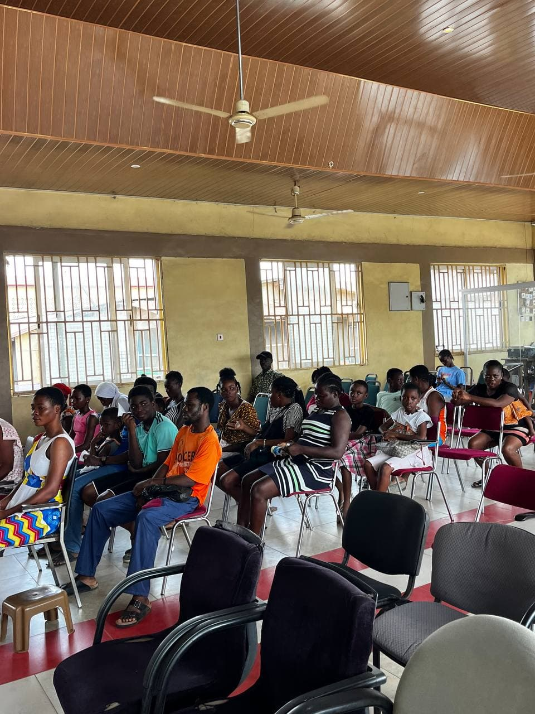
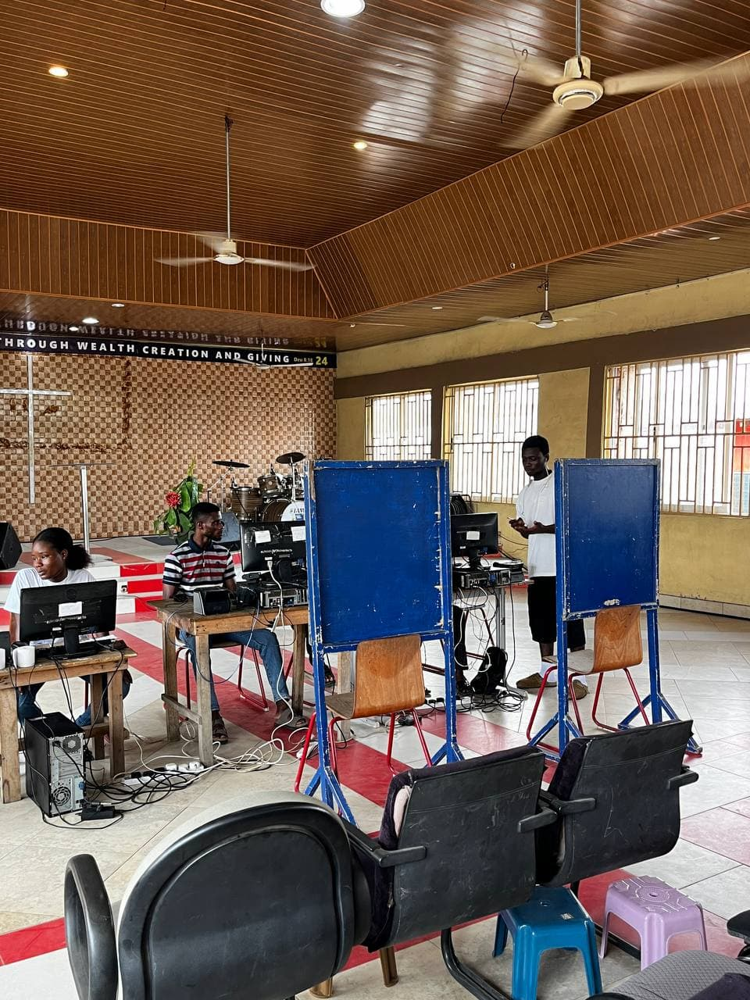
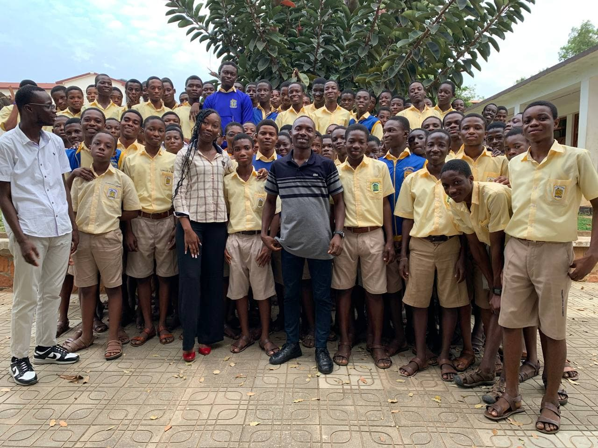
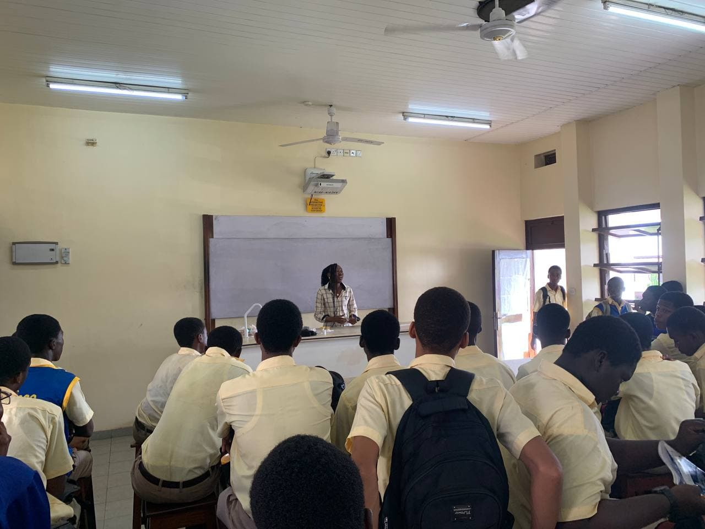
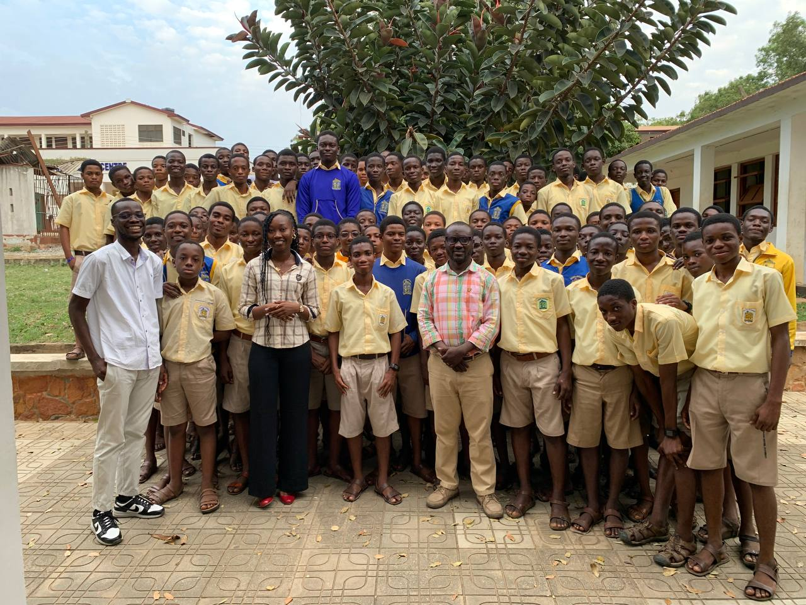
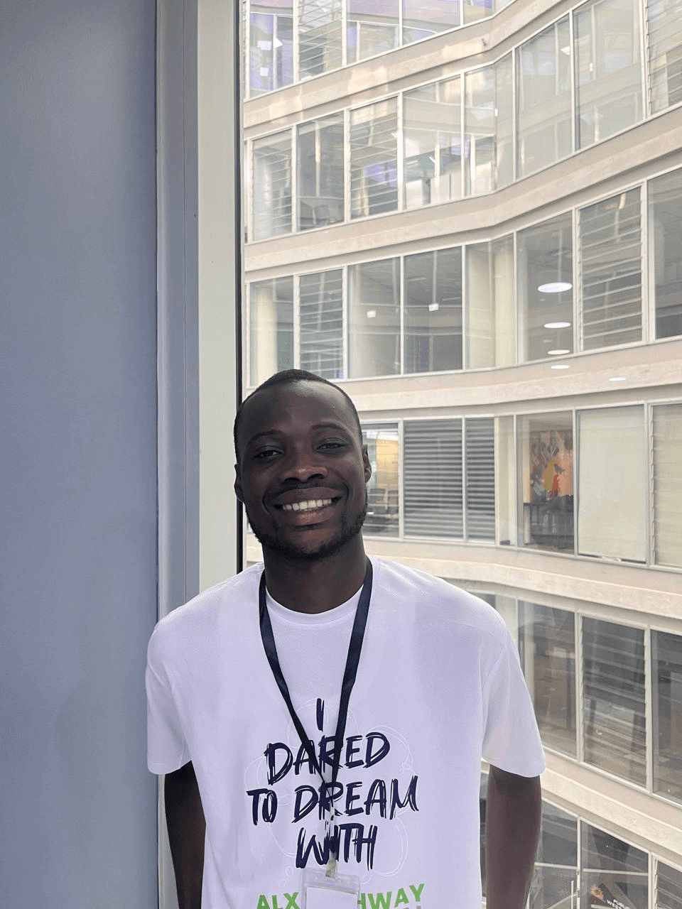

Community Health Coordinator
Nov 17, 2025 • Volunteer
Free Health Screening Organizer
-
Initiated and led a free health screening exercise for community
members, focusing on vital checks including blood pressure,
malaria, and glucose levels.
-
Collaborated with local health professionals and volunteers to
ensure accurate screenings and safe procedures, impacting the
lives of over 350 residents.
-
Created awareness on preventive healthcare through on-site
education and distribution of basic wellness materials.



Youth Tech & Leadership Mentor
May 5, 2025 • Volunteer
High School Coding & Leadership Sessions Organizer
-
Organized coding workshops for high school students, introducing
them to programming fundamentals using languages like Python and
Scratch.
-
Delivered leadership development sessions alongside coding
lessons to inspire confidence, teamwork, and a growth mindset
among participants.
-
Empowered over 120 students across multiple schools with digital
and leadership skills, laying the foundation for tech-driven
youth leadership.



ALX Career Fair Volunteer
Mar 12, 2025 • Volunteer
Empowering participants through guidance and career support
-
Volunteered at the ALX Career Fair, guiding participants through
networking opportunities and helping them make professional
connections.
-
Shared career resources and practical advice to help attendees
prepare for interviews and next steps in their job search.
-
Assisted participants in connecting with industry professionals,
contributing to a smooth, impactful experience that empowered
attendees to make informed career decisions.
